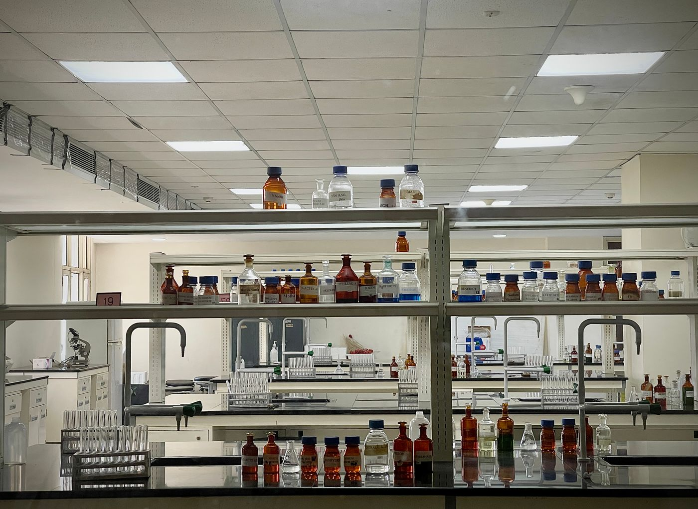
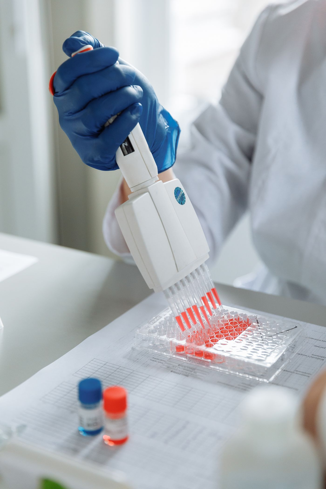
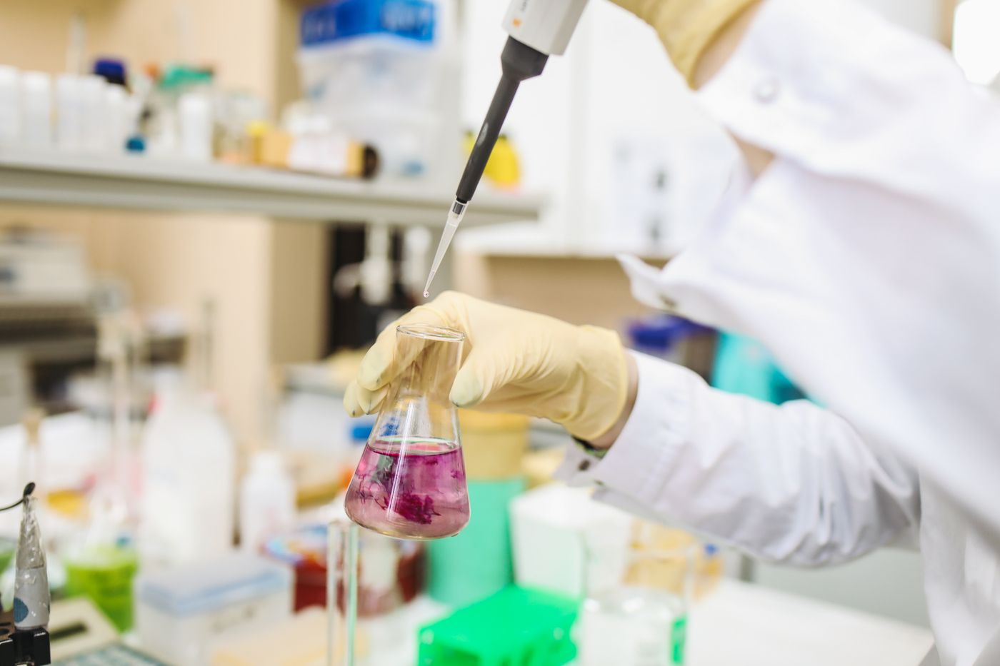
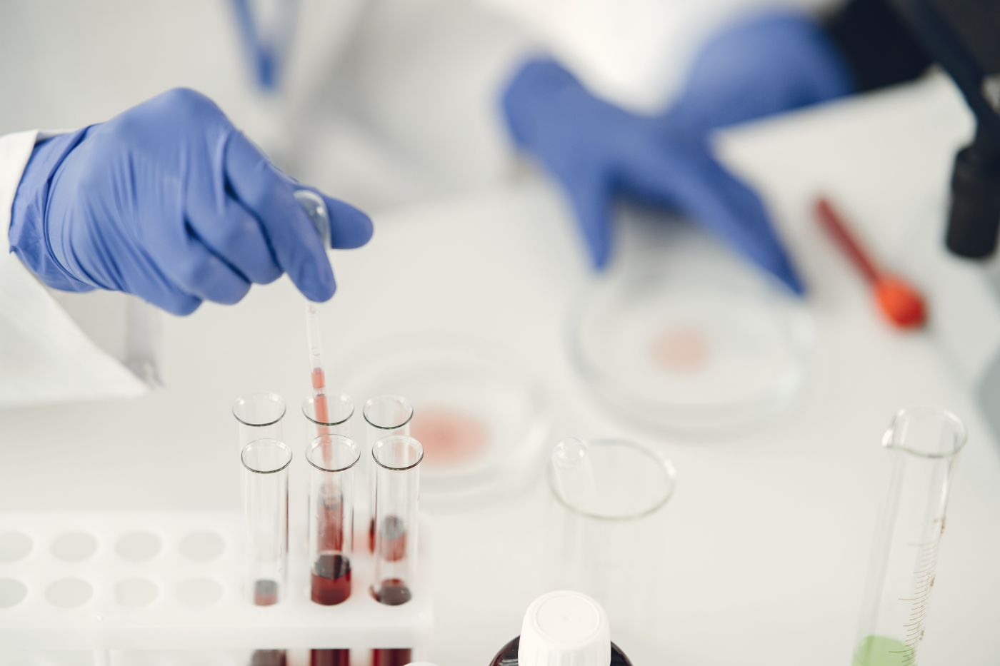
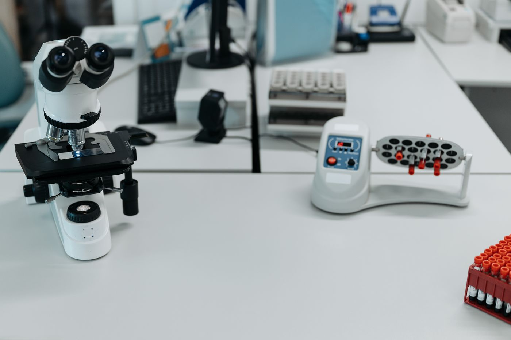
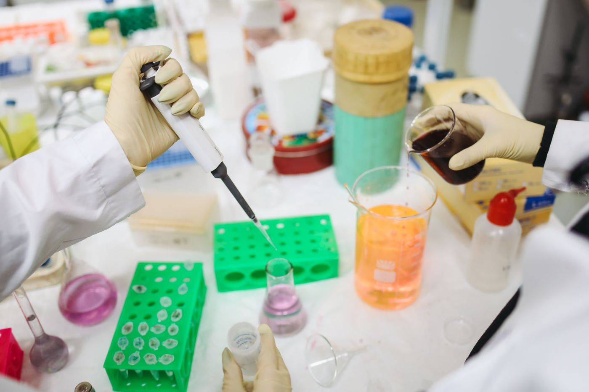

SUPPORTING YOUR EVERYDAY SCIENCE연구가 이어지는 곳,
연구가 이어지는 곳,
LMS Bio.
작은 소모품에서 실험의 기반이 되는 시약까지.
연구의 매일을 위한 기자재와 재료를 만나보세요.
FOR YOUR RESEARCH실험의 시작과 반복,
실험의 시작과 반복,
그 사이의 모든 준비.
연구용 시약과 실험 소모품, 기자재를
사용 목적에 맞게 검토합니다.

연구 분야를 설명하기 위한 참고 이미지입니다.


개별 제품·브랜드의 취급 여부와 공급 조건은 상담 후 확인됩니다.
ABOUT LMS BIO연구를 이해하는 준비,
연구를 이해하는 준비,
꾸준히 이어지는 실험.
LMS Bio는 이화학기기와 과학기자재, 시약의 공급 및 무역, 환경·학술 연구개발 관련 사업을 수행하는 기업입니다. 연구 현장에 필요한 품목과 조건을 하나씩 확인합니다.
LMS Bio 문의 안내 ↗
SUPPLY GUIDE
필요한 만큼, 필요한 규격으로.
재주문할 품목이라면 기존 모델명과 규격을,
처음 찾는 품목이라면 실험 목적을 알려주세요.
01 · 품목 정리제품명 · 규격 · 필요 수량
02 · 조건 검토호환성 · 보관 조건 · 공급 여부
03 · 일정 협의견적 · 납기 · 배송 조건
CONTACT US필요한 품목부터
필요한 품목부터
함께 확인합니다.
품목명·모델·필요 수량·희망 일정을 준비해 주세요.
취급 가능 여부와 공급 조건은 확인 후 안내합니다.
고객 상담용 연락처는 회사 확인 후 공개할 예정입니다.
아래는 제공 자료에 기재된 세금계산서 수신 이메일입니다.
견적 문의에는 어떤 정보가 필요한가요?
품목명, 제조사 또는 모델명, 규격, 수량과 희망 납기입니다. 모델을 모르는 경우 사용 목적과 필요한 사양을 정리해 주세요.
사진 속 제품을 바로 구매할 수 있나요?
사진은 취급 분야를 설명하는 참고 이미지입니다. 실제 판매 모델, 재고, 가격과 제조사 공급 가능 여부는 별도 확인이 필요합니다.
납기와 공급 조건은 언제 알 수 있나요?
품목과 수량, 배송 지역 등을 확인한 뒤 안내하는 항목입니다. 이 검토본에서는 주문이나 결제가 이루어지지 않습니다.